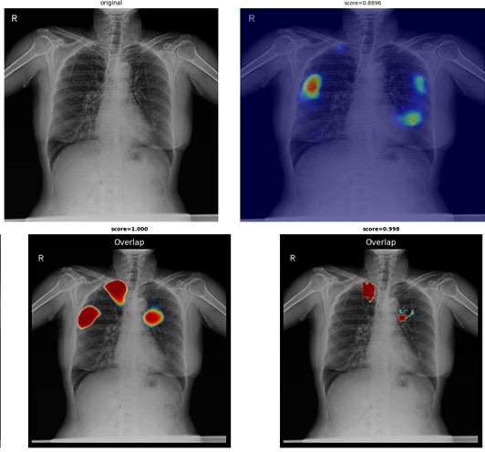

Chest X-ray lesion detection with a foundation model
JLK · 2024 – nowSemi-supervised methods didn't help on our in-house data, so I looked at the representation instead. Switching the backbone to a chest X-ray foundation model helped, but lesion and normal features were still mixed. A patch-level k-NN check showed lesion regions behave differently, and I designed a module to push that signal further.
TRIEDSemi-supervised SOTA → no gain
CHANGEDCXR foundation model as backbone
ADDEDModule that separates lesion features
